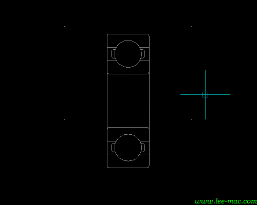
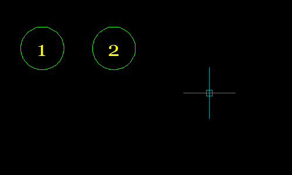

Automatically Label Attributes
This page is delivered for consistency purposes only, as part of the LeeMac sample module of DynALisp, which shows how DynALisp turns existing AutoLISP programs into a module. The program and its description are the work of Lee Mac, who keeps all the credit for them. The original page, with the latest version, is on Lee Mac's website: https://lee-mac.com/autolabelattributes.html
| Function Syntax | autolabelon / autolabeloff (to enable/disable manually) |
| Current Version | 1.4 |
| Compatible with AutoCAD for Mac? | No |
| Compatible with AutoCAD LT? | Yes |
| Original Page | lee-mac.com/autolabelattributes.html |
Program Description
This program will automatically populate a specific attribute tag with a unique label within a set of attributed blocks or multileaders with attributed block content, automatically renumbering if blocks are added, copied or erased.
The program uses an Object Reactor to monitor modification events for the set of all attributed blocks or multileaders (mleaders) with a block name matching a block name or wildcard pattern specified within the program source code.
Following modification to any matching attributed block or multileader, a Command Reactor will trigger the program to automatically renumber a specific attribute tag held by all matching attributed blocks or multileaders in the active layout of the drawing.
The block references or multileaders are numbered in the order in which they are encountered in the drawing database of the active drawing (that is, the order in which the objects were created).
The program also allows the user to specify a numbering prefix & suffix, the starting number for the numbering, and the number of characters to be used for fixed length numbering with leading zeros (i.e. if the numbering length is set to 2, the program will number the objects 01,02,03,...,10,11,12).
The autonumbering functionality is automatically enabled on drawing startup when the program is loaded, and may be subsequently enabled or disabled manually using the commands autolabelon & autolabeloff respectively.
For continuous operation it is recommended that the program is automatically loaded on drawing startup - please refer to my Loading Programs Automatically tutorial if you are unsure how to accomplish this.
For instructions on how to set up the program to work with your attributed blocks, please read the Instructions for Running section below.
Demonstration of Automatic Renumbering


Instructions for Running
This program will run automatically when loaded on drawing startup and may be subsequently enabled or disabled using the commands autolabelon and autolabeloff respectively.
The following instructions explain how to configure the program to automatically label an attribute within a specific block:
- Download the program file (.lsp) from the AutoLISP download link above.
- Open the downloaded file in Windows Notepad (or an equivalent plain text editor).
- Near the top of the file, you will find the following Settings section:
;;----------------------------------------------------------------------;; ;; Settings ;; ;;----------------------------------------------------------------------;; autolabel:blockname "myblock" ;; Name of block to be updated (not case-sensitive / may use wildcards) autolabel:blocktag "mytag" ;; Attribute tag to be updated (not case-sensitive / may use wildcards) autolabel:prefix "" ;; Numbering prefix (use "" for none) autolabel:suffix "" ;; Numbering suffix (use "" for none) autolabel:start 1 ;; Starting number autolabel:length 2 ;; Fixed length numbering (set to zero if not required) autolabel:startup t ;; Enable on drawing startup (t=enable / nil=disable) autolabel:objtype 3 ;; Bit-coded integer > 0 (1=attributed blocks; 2=multileader blocks) ;;----------------------------------------------------------------------;;
- Here you can modify the name of the block and attribute tag to be numbered by the program, specify an optional prefix & suffix, specify a starting number for the numbering, specify a number of characters for fixed length numbering (as described above), configure whether the application is enabled by default on drawing startup, and specify whether the program should renumber attributed blocks, multileaders with attributed block content, or both.
- Note that the block name & attribute tag parameters are not case-sensitive and may use wildcard patterns to match multiple block names or attribute tags.
- When you are satisfied with the configuration, save the modified file.
- Load the program as usual. (Refer to How to Run an AutoLISP Program for instructions).
Bundled program notes
;;---------------------=={ AutoLabel Attributes }==---------------------;;
;; ;;
;; This program will automatically populate a specific attribute tag ;;
;; with a unique label within a set of attributed blocks, renumbering ;;
;; if blocks are added, copied or erased. ;;
;; ;;
;; The program uses an Object Reactor to monitor modification events ;;
;; for the set of all attributed blocks with a block name matching ;;
;; a block name or wildcard pattern specified within the program ;;
;; source code. ;;
;; ;;
;; Following modification to any matching attributed block, a Command ;;
;; Reactor will trigger the program to automatically renumber a ;;
;; specific attribute tag held by all matching attributed blocks in ;;
;; the active layout of the drawing. ;;
;; ;;
;; The block references are numbered in the order in which they are ;;
;; encountered in the drawing database of the active drawing ;;
;; (that is, the order in which the blocks were created). ;;
;; ;;
;; The program also allows the user to specify a numbering prefix & ;;
;; suffix, the starting number for the numbering, and the number of ;;
;; characters to be used for fixed length numbering with leading zeros ;;
;; (i.e. if the numbering length is set to 2, the program will number ;;
;; the blocks 01,02,03,...,10,11,12). ;;
;; ;;
;; The autonumbering functionality is automatically enabled on drawing ;;
;; startup when the program is loaded, and may be subsequently enabled ;;
;; or disabled manually using the commands 'AUTOLABELON' & ;;
;; 'AUTOLABELOFF' respectively. ;;
;;----------------------------------------------------------------------;;
;; Author: Lee Mac, Copyright © 2011 - www.lee-mac.com ;;
;;----------------------------------------------------------------------;;
;; Version 1.0 - 2011-09-14 ;;
;; ;;
;; - First release. ;;
;;----------------------------------------------------------------------;;
;; Version 1.1 - 2015-09-20 ;;
;; ;;
;; - Program entirely rewritten. ;;
;; - Added callback function to handle command cancelled & command ;;
;; failed events when modifying autonumbered blocks. ;;
;; - Added the ability to specify a numbering prefix & suffix, ;;
;; specify a starting number, and use fixed length numbering ;;
;; (i.e numbering with leading zeros: 01,02,...,10). ;;
;; - Block Name & Attribute Tag parameters may now use wildcards to ;;
;; match multiple block names & tags (the first attribute tag which ;;
;; matches the wildcard pattern will be numbered). ;;
;; - Incorporated compatibility for Multiline Attributes. ;;
;;----------------------------------------------------------------------;;
;; Version 1.2 - 2015-09-27 ;;
;; ;;
;; - Program modified to only increment numbering counter if an ;;
;; attribute matching the target tag name is found. ;;
;; - Implemented compatibility for multileader blocks. ;;
;;----------------------------------------------------------------------;;
;; Version 1.3 - 2018-10-27 ;;
;; ;;
;; - Fixed bug in autolabel:getattributetagid function preventing ;;
;; numbering of multileader attributed blocks. ;;
;;----------------------------------------------------------------------;;
;; Version 1.4 - 2020-02-15 ;;
;; ;;
;; - Program modified to account for attributed MInsert Blocks. ;;
;;----------------------------------------------------------------------;;